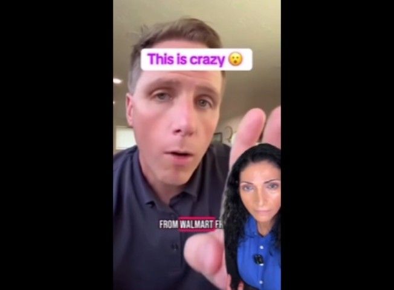
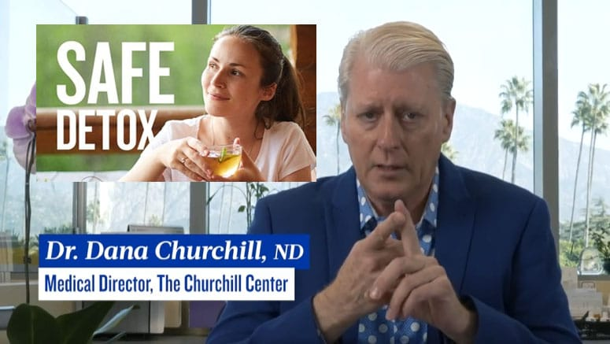
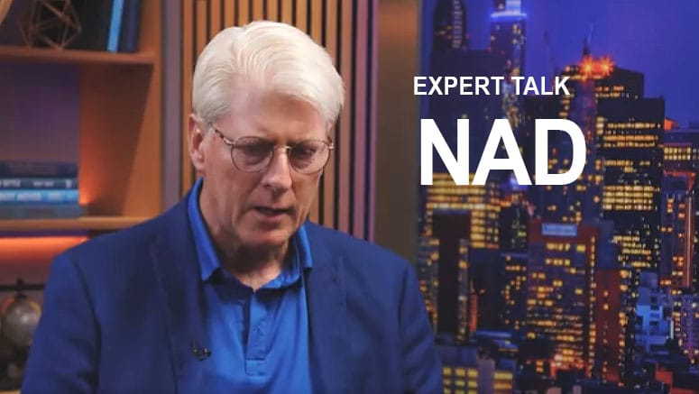

The Churchill Center
FDA Upgrades Recall on 160,000 Bottles of Popular Thyroid Medication


Read moreShow less
Roughly 160,630 bottles of levothyroxine sodium tablets are under recall, the FDA said.
The Food and Drug Administration (FDA) this week upgraded a recall of tens of thousands of bottles of a type of commonly prescribed thyroid medication.
UNITED STATES – NOVEMBER 9 – The outside of the Food and Drug Administration headquarters is seen in White Oak, Md., on Monday, November 9, 2015. The FDA is a federal agency of the United States Department of Health and Human Services and has been in commission since 1906. (Photo By Al Drago/CQ Roll Call)
Roughly 160,630 bottles of levothyroxine sodium tablets are under recall, the FDA said in multiple notices (opens in new tab)issued this week. The federal agency classified the levothyroxine sodium recall as Class II, which means that there is a moderate risk to public health.
The reason for the recalls is that the drug is deemed “subpotent” and the content of the medication is “below the approved specification,” the agency said.
The prescription-only drug is manufactured by India-based Intas Pharmaceuticals Limited for North Carolina-based Accord Healthcare, the FDA said. The levothyroxine sodium tablets come in different potencies and in different bottle sizes.
Other details about the recall were not provided, including whether there were any adverse impacts associated with the medication.
A list of the specific recalled tablets, as well as the products’ lot numbers and expiration dates, can be accessed on the FDA’s recall enforcement website (opens in new tab). Or the specific drug recall notices can be accessed here: 25 mcg, 90-count bottle (opens in new tab); 25 mcg, 1000-count bottle (opens in new tab); 50 mcg, 90-count bottle (opens in new tab); 100 mcg, 1000-count bottle (opens in new tab); 112 mcg, 1000-count bottle (opens in new tab); 150 mcg, 1000-count bottle (opens in new tab); and 175 mcg, 1000-count bottle (opens in new tab).
cording (opens in new tab) to the FDA, a Class II drug recall is when there is “a situation in which use of or exposure to a violative product may cause temporary or medically reversible adverse health consequences or where the probability of serious adverse health consequences is remote.”
Intas Pharmaceuticals has been the recipient of multiple FDA-issued import alerts in 2023, according to several warning letters posted (opens in new tab)online (opens in new tab) by the agency.
In two instances, in 2022 and 2023, the FDA letters said U.S. officials inspected an Intas Pharmaceuticals’ drug manufacturing facility in Gujarat, India, and found, in both instances, “significant violations.”
“Because your methods, facilities, or controls for manufacturing, processing, packing, or holding do not conform” to the agency’s manufacturing standards, said both letters, the company’s “drug products are adulterated.”
The FDA letters also said to the company that its “quality control unit failed to exercise its responsibility to ensure drug products manufactured are in compliance” with the agency’s standards and cited issues with the company’s data.
Meanwhile, in one of the letters (opens in new tab), the FDA also stated that a company official had destroyed documents “by pouring acetic acid in a trash bin containing analytical balance strips” and that responses to the agency’s criticisms were not adequate.
Levothyroxine sodium, the recalled drug, is a medication used to treat hypothyroidism, or when the thyroid gland doesn’t produce enough hormones. The drug acts as a replacement therapy and supplements natural thyroid levels.
“This medicine is also used to help decrease the size of enlarged thyroid glands (also called a goiter). Levothyroxine is also used together with surgery and radioiodine treatment to treat a type of thyroid cancer called thyroid-dependent well-differentiated thyroid cancer,” says (opens in new tab) the Mayo Clinic on its website.
The drug is one of the most well-prescribed medications in the United States. Some 82 million estimated prescriptions were filled out for levothyroxine sodium in 2022, according to data (opens in new tab) from ClinCalc, and about 18 million Americans took it that year.
In a separate recall, Mylan Pharmaceuticals Inc. recalled levothyroxine sodium tablets that were distributed between August 2023 and November 2024, according to a notice (opens in new tab) released by the California State Board of Pharmacy in December.
Originally Posted by Epoch Times
The Epoch Times contacted Intas Pharmaceuticals for comment on Tuesday. (opens in new tab)

